
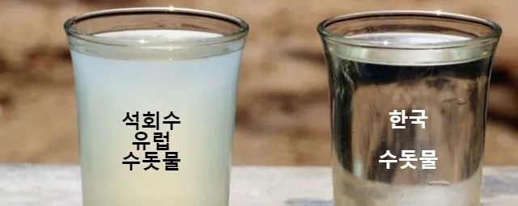
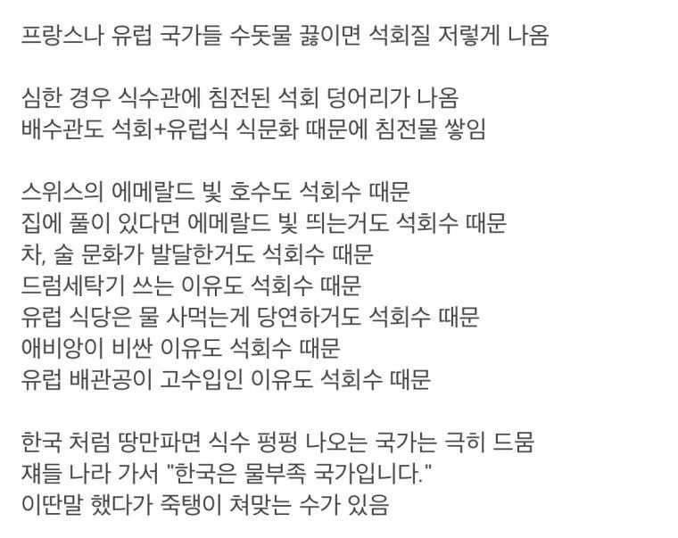

water tribe 국가인걸로 하자
물이 부족한게 아니라 물을 저장하고 관리하는게 어려운 나라임.
비오는 만큼 저장되면 좋겠지만 유실되는 빗물이 꽤 됨.
지하에 존나 큰 빗물저수장 만들면 안될까
석회암 뚫기 싫대!
?? 뭔소리야 한국은 화강암천지라서 존나 뚫기 어려운거지 좆밥 석회암이었으면 진작 만들고도 남았지.
석회암이었으면 석회수가 펑펑 나왔을거라 생각해요 ㅎㅎ
그래서 모래댐 만들어서 쓰기 시작함
진정한 의미의 '미네랄 워터' 네
ㅇㅇ still 또는 미네랄 나뚜랄인지 먼지 내츄럴같은거 이렇게 3개로불림
베트남가서 수돗물로 양치했을 때 존나 이상하더라
베트남 호텔 가면 보통 방에 생수병2개, 화장실에 2개 있는데 화장실에 있는 생수는 마시라고 준 게 아니라 양차하고 행구라고 준거임.
서로마 제국의 붕괴로 상수도망이 없어지는 바람에 그냥 석회 함량이 높은 우물물이나 시냇물을 쓰다 보니 문제가 생긴 것. 때문에 유럽에서도 음용수로는 신선한 빗물을 더 높게 쳤고, 신선한 빗물이나 깨끗한 호숫물은 많이 구하기가 힘들었기 때문에 수산화칼슘의 불편한 맛을 없애기 위해 여러 가지 방법이 사용되었다......
이새끼들 스스로 불러온 재앙이었네
근데 그 수도망이 납재질 아니었나요
석회질높아서 납수도관이 석회로 코팅됨 ㅋ
와 그럼 납 문제가 사라지나요?
• 납 수도관: 로마는 거대한 상하수도 시스템에 납 파이프를 사용했으나, 로마 물의 높은 석회 성분이 납관 내부에 막을 형성해 실제 물로 인한 납 용출은 상대적으로 적었습니다.
• 포도주 감미료(아세트산 납): 포도즙을 납 용기에 끓여 만든 시럽(데프루툼)을 포도주와 음식의 감미료로 널리 사용해 고농도의 납을 직접 섭취했습니다.
• 조리기구 및 식기: 납이 포함된 청동 냄비나 납땜 그릇을 사용해 음식물로 납이 스며들었습니다
수도관 납은 미미하고 오히려 포도주납이 문제였다네요
이 글 자체가 완전히 다 틀림
로마의 수도망 붕괴를 유럽 전체에 적용하는것 부터 말이 안됨 우물, 샘, 저수조가 계속 사용됬고 중세에도 새로운 상수 시설 건설과 사업은 계속 됐음 인간한테 제일 중요한게 물인데.. 그리고 여전히 이런 글로 잘못 알려지는 통념과 달리 저런 물들은 100% 마셔도 되고 사람 몸에 아무런 지장도 없을 뿐더러 중세인들이 이런 물들을 피한적도 없음 저런 물들이라 유럽인들은 물 대신 술을 마셨다 이거는 정말정말정말로 잘못 알려진거임 그리고 저런 경수는 수산화칼슘을 탄 석회수가 아님 자연적인 칼슘,마그네슘,중탄산염등으로 이뤄짐
마셔도 된다고 같은물이 아님. 실제로 맛이 달라.
응 전혀 아니야.
물 하나만으로 단군할배 재평가
베트남에서 물갈이 때문에 2주간 고생함
난 인니 갔다 물갈이로 뒤질뻔했다..
한국은 수돗물도 더럽다고 생수로 음식 해먹는사람들 많은데
water tribe 국가라고 ㅋㅋㅋ
나는 시애틀살아서 그런가 물 존나 놓다 물 좋고 공기좋고ㅋㅋ 한국처럼 걍 수돗물 마셔도됨 저 위에 지도보니까 퍼런색이네
로키산맥 일부가 사라진 대륙인데 그쪽 영향받은 일부가 화강암 암반이라서
저 물이 어떠냐고 하는 놈은 에비앙으로 커피 함 내려마셔봐라
어으달다
가습기나 냄비에 하얗게 남는것도 대부분 지역은 석회가 아니라
물 썩지 말라고 수돗물에 희석해둔 염소성분 이라던데
소독을 위해 첨가한 염소는 가열하면 기체가 되어 날아갑니다. 우리나라도 수돗물에 염소 넣어서 소독합니다. 근데 하얗게 안남지요? 잘못된 정보에 속으신겁니다.
우리나라는 대부분 석회나 미네랄이 적은 연수이지만 그렇다고 경수가 아주 없는건 아니며 연수도 오래 사용하면 잔여물이 남습니다.
석회 안끼지는 않더라
화강암 베이스 지층이라 물이 깨끗한데 그거뿐이라더라
보통 화강암 베이스 지역은 살기 아주 힘들기때문에(농사도 평지도 없는) 이정도로 오래.정주하는 사례가 드물죠
알프스지역가면 또 석회없이 깨끗한 수도물나오던데
ㅋㅋ 피부하얕고 옷도 하얀것만입고 냄세 안나는 물 부족 국가 ㅋㅋ
탭워터 한 1-2주는 먹을만한데 사사사철 맨날 마시라하면
못 마실거같음
기름 한방울 안나오니 물이라도 자랑하고 싶었던 나라
매드 맥스 유니버스면 최강국
이 정도면 석유도 정수된게 아닐까? 돌려줘요..
석회수 기만 하면 다행이지
저번주 현장가보니 대장균에 육가크롬에 난리도 아니더라 쓰벌 ㅋㅋㅋ
집 수영장이 에메랄드빛인 이유 = 걍 물이 붉은빛 흡수하고 바닥이랑 벽색깔이 그래서 그런거. 초록색이면 이끼낀거고, 석회수면 오히려 물이 뿌얘지고 벽에 하얀자국 남음.
유럽 식당에서 물 사먹는 이유 = 유럽 수돗물은 EU기준으로 관리돼서 경수여도 마시는데 문제없음. 칼슘, 마그네슘이 좀 많을뿐임. 물 파는건 그냥 장사 관행이고, 프랑스는 오히려 밥먹는 손님이 달라고 하면 수돗물 공짜로 줘야됨.
에비앙이 비싼 이유 = 에비앙 자체가 칼슘 꽤 들어간 경수임. 석회 피하려고 사먹는 물이 아니라는거. 비싼건 브랜드값이랑 운송비, 수입비용 때문이고 프랑스 현지에선 흔한 생수임.
차, 술 문화가 발달한 이유 = 옛날 유럽사람들이 물 대신 맥주 마셨다는 얘기는 석회가 아니라 세균오염 때문이라는 설이고, 그마저도 과장이라는게 역사학계 얘기임. 영국 차문화는 무역이랑 식민지 역사에서 나온거. 오히려 경수로 차 우리면 표면에 막 생겨서 맛 별로임.
한국처럼 땅만 파면 물 나오는 나라는 드물다 = 한국 수돗물은 대부분 댐이나 강물같은 지표수 쓰고 지하수 비중은 작음. 반대로 독일은 상수도 상당부분, 덴마크는 거의 전부를 지하수로 씀. 한국물이 연수인건 화강암 지질 때문이지 물이 많아서가 아님.
"한국은 물부족 국가" 했다가 맞는다 = 물이 센물이냐 단물이냐(수질)랑 물이 많냐 적냐(수량)를 헷갈린거임. 한국은 인구밀도 높고 비가 여름에 몰려서 1인당 쓸수있는 물이 실제로 프랑스같은 나라보다 적음. 예전에 물스트레스 국가로 분류된것도 이거때문임.
유럽 수돗물에 석회낀다 = 파리, 런던, 벨기에같은 석회암 지대는 맞음. 근데 노르웨이나 스코틀랜드는 단물이라 유럽 전체로 퉁치는건 틀림.
식수관에서 석회덩어리 나온다 = 배관이랑 수도꼭지에 석회 쌓이고 조각 떨어지는건 맞음. 근데 덩어리까진 좀 과장임.
스위스 호수가 에메랄드빛인 이유 = 주된 원인은 빙하가 바위 갈아서 만든 엄청 고운 돌가루가 빛을 산란시키는거임. 석회암 지대에서 탄산칼슘이 좀 거드는 경우는 있어도 핵심은 아님.
배수관 침전물이 석회랑 유럽식 식문화 때문 = 석회가 배수관에 쌓이는건 맞는데, 식문화 탓은 근거없음. 기름막힘은 어느나라나 다 있음.
드럼세탁기, 건조기 쓰는 이유 = 경수로 빨래 자연건조하면 수건 뻣뻣해지는 정도의 연관은 있음. 근데 건조기 쓰는건 주로 날씨, 습도, 집공간 때문이고, 유럽은 오히려 미국보다 건조기 덜씀.
유럽 배관공이 고수입인 이유 = 원래 인건비 비싸고 자격증 따기 까다롭고 사람이 부족해서 그런거임. 석회때문에 일감이 좀 늘순 있어도 그게 주된 이유는 아님.
유럽 일부지역이 경수라 석회 잘낀다는것만 맞고 나머지는 거의 다 상관없는걸 석회탓으로 뇌피셜 갖다붙임
입이 텁텁할것같음